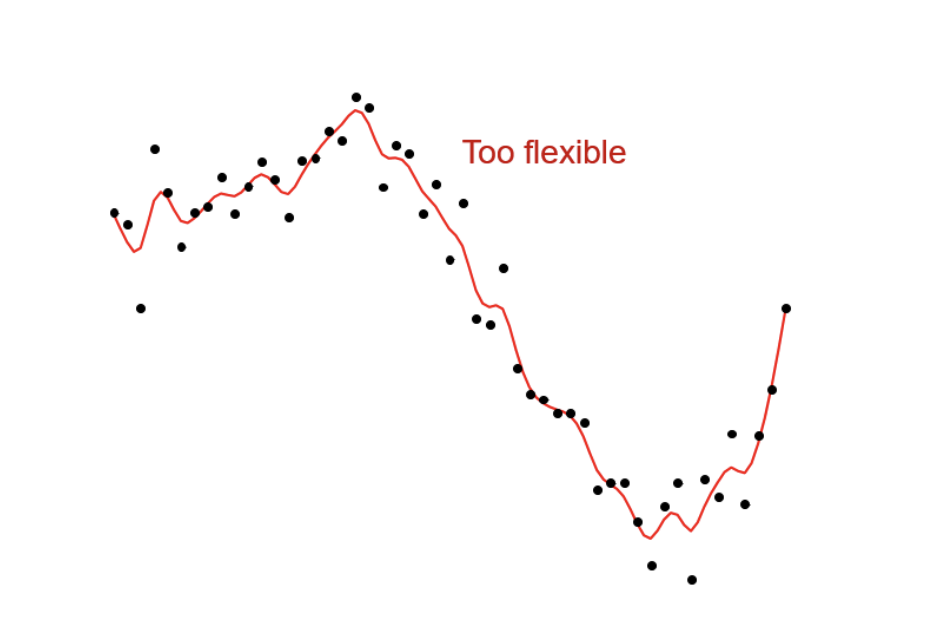

Yang MSA
Notes
Blog
Analytics
Notes curated from my statistics and analytics courses taught by Dr. Aric LaBarr and Dr. Susan Simmons.
analytics
Author
Yang Chen
Categories
All
(11)
analytics
(11)
Introduction to Logistic Regression
analytics
Logistic regression is one of many classification models that can help us predict a specific class in a categorical variable.
Jul 18, 2023
Yang Chen
Model Building and Scoring for Prediction
analytics
Linear regression is a good initial approach to model building, but not the only form of regression.
Jul 13, 2023
Yang Chen
Correlated Error Terms
analytics
When we’re trying to understand correlated error terms, we need to know the source of our data:
Jul 11, 2023
Yang Chen
Diagnostics
analytics
Recall the assumptions of linear regression:
Jul 10, 2023
Yang Chen
Model Selection
analytics
Information criteria
are metrics that are commonly used to “select” variables for the model.
Jul 7, 2023
Yang Chen
Multiple Linear Regression
analytics
Models with more than one predictor variable are called
multiple regression models
.
Jul 6, 2023
Yang Chen
More Complex ANOVA & Regression
analytics
A
model
is a mathematical relationship between explanatory variables and response variables.
Jul 3, 2023
Yang Chen
Ordinary Least Squares Regression
analytics
Pearson’s correlation measures
linear
relationships.
Jun 30, 2023
Yang Chen

Introduction to ANOVA and Regression
analytics
The population model for our linear model is written as:
Jun 29, 2023
Yang Chen
Introduction to Statistical Inference
analytics
Last time we talked about different statistical measures like mean and standard deviation. These are called
point estimates
.
Jun 28, 2023
Yang Chen
Exploratory Data Analysis
analytics
Our variables are quantities or qualities of interest. These are also called:
Jun 27, 2023
Yang Chen
No matching items